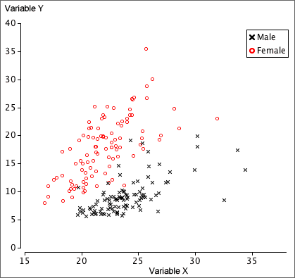

Distinguishing groups in a scatterplot
We now consider how a categorical variable, Z, can help explain the relationship between two numerical variables, X and Y. It equivalently examines whether the relationship between X and Y is the same in each of several groups.
As in most other situations, data analysis should start by examining the data graphically. Differences between the groups can be shown with different symbols and/or colours for the crosses in a scatterplot of Y against X.
